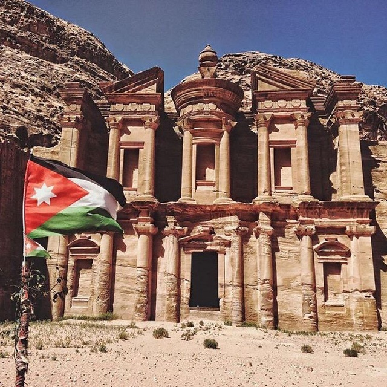
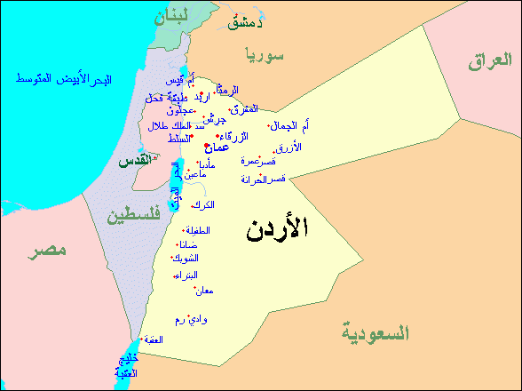

ارشدني
نصائح قبل السفر و السياحة في الاردن
:التخطيط لعُطلتك السياحية في الاردن لتكون من 7 إلى 10 أيام :
إذا كُنت تتساءل كم تحتاج لإستكشاف اماكن السياحة في الاردن ؟ فالإجابة هي في المتوسط أسبوع. فأنت ستحتاج أسبوع على الأقل لرؤية جميع الاماكن السياحية في الأردن، ولكن يُمكنك أيضًا الإستمتاع بمشاهدة الكثير إذا كان لديك وقت أقل. على اقل تقدير يُمكنك التخطيط لعُطلتك السياحية لتكون 5 أيام.
وبالرغم من ذلك فأن المُدة المثالية التي يُمكنك أن تستغرقها ، للقيام بعُطلة سياحية مثالية في الاردن ، فأنت بحاجة إلى من7 إلى 10 أيام. وذلك لأن هناك الكثير من الأماكن المُدهشة التي يمكن رؤيتها في الأردن ، علاوة على العديد من الأنشطة الترفيهية والسياحية.
:حاول إستئجار سيارة للتنقل داخل الأردن :
إذا كُنت تُخطط لزيارة الأردن بنفسك، قد يكون من المُحبط محاولة التجول بدون سيارة. وبالرغم من أن الأردن بلد صغير جدًا، إلا أن قلة عدد سكانه تعني أنه لا يوجد الكثير من البنية التحتية عندما يتعلق الأمر بوسائل النقل العام.
فإذا كًنت تًخطط للتنقل بينمن مدينة إلى أخرى، على سبيل المثال من عمان إلى البتراء،فقد يُناسبك ركوب حافلة جيت. ولكن هناك العديد من المواقع السياحية التي لا يتم خدمتها بواسطة الحافلات. وتشمل هذه الأماكن وادي رم وغيره.
أحرص على إرتداء القُبعة وإصطحاب وشاح :
السياحة في الاردن أغلبها تكون في أماكن صحراوية ، ونظرً للطقس الحار، قد تكون فكرة جيدة تغطية رأسك لتجنب التعرض لضربة الشمس بسبب إرتفاع درجات الحرارة. وهذا هو الحال خاصة عند زيارة موقع سياحي صحراوي مثل وادي رم أو البتراء. كذلك قد تحتاج الزائرات إلى وشاح عند زيارة موقع ديني، مثل مسجد الملك حسين بن طلال ، الذي يستحق الزيارة.
تجنب الشُرب من مياة الصنبور :
مياه الصنبور غير صالحة للشرب في الأردن. على عكس العديد من الدول الغربية. وذلك حيث تُستخدم مياه الصنبور في الأردن فقط لأغراض الغسيل. ومع ذلك، يمكنك الحصول على المياه الصالحة للشُرب وإستلامها في أي وقت من اليوم بخدمات التوصيل، أو يمكنك شراء زُجاجات المياة المعدينة من أي من المحلات التجارية المنتشرة في كل مكان.

إحذر التصوير الفوتوغرافي بدون إذن :
الأردن بلا شك واحدة من أكثر المناطق فوتوجينيك في العالم. غالبًا ما يكون السكان المحليون سعداء بالتقاط الصور الفوتوغرافية الخاصة بك. ولكن قبل محاولة التقاط أي صور لهم، اطلب الإذن أولا، خاصة عندما تكون في مكان به تجمعات للنساء والعوائل.
تجنب ساعة الذروة :
تصل الاختناقات المرورية إلى ذروتها بين الساعة 2 ظهرًا وحتى الساعة 5 مساءًا. يكاد يكون من المستحيل العثور على سيارة أجرة في ذلك الوقت، وإذا قمت بذلك، فإن سائق سيارة أجرة غالبا ما سيكون مُتردد ليأخذك إلى أي مكان بعيد لتجنب حركة المرور. خطط دائما لتحركاتك عبر المدينة مسبقًا ، أو أختر السير إلى وجهات ومزارات سياحية قريبة سيرًا على الأقدام خلال تلك الأوقات.
استخدم يديك :
آداب المائدة غير مُبالية في الأردن. فتناول الطعام بيديك هو عادة شائعة، ويُشير أيضا إلى أنك تتمتع بالطعام المُقدَم. فعلى سبيل المثال “المنسف” الذي يُعتبر الطبق التقليدي والأشهر في الأردن، عادة ما يؤكل بيديك. لذلك تخلى عن الشوكة والسكنية فلا مجال لإستخدامهم كثيرًا.
يُفضل إصطحاب مُرشد سياخي :
إذا كانت تلك هي رحلتك الأولى في الأدرن ، وليس لديك علم بعناوين الأماكن السياحية وأهم المزارات. ننصحك بمتابعة مُرشد سياحي ليُسهل عليك رحلتك، وإختصارًا للوقت لتتمكن من الإستمتاع بزيارة أكبر عدد من الأماكن السياحية في الاردن.
لا يفوتك التسوق في الأردن :
من أجمل الأنشطة التي يُمكنك القيام بها أثناء السياحة في الاردن هو جولة تسوق. فلا يفوتك زيارة أسواق ومولات الأردن المختلفة، وشراء أجمل الهدايا التذكارية. فإذا كُنت تنوي التوجه للعاصمة عمان ، إليك اهم مولات عمّان التجارية المُوصى بها :
معلومات عن الاردن
العاصمة:مدينة عمّان .
العملة:الدينار الأردني.
اللغة:اللغة العربية الأردنية.
الموقع:تقع المملكة الأردنيّة شمال غرب قارّة آسيا، في المنطقة الصحراويّة الصخريّة شمال شبه الجزيرة العربية. يحدها من الجنوب الشرقي السعودية ، وتشترك في حدودها الغربية مع دولة فلسطين. أما من الشرق تحدها الجمهوريّة العراقيّة، ومن جهة الشمال يحدها الجمهوريّة السوريّة. كذلك يُطِلُّ الأردنّ على البحر الأحمر من الجهة الجنوبيّة الغربيّة.

إلى هُنا نكون قد وصلنا لنهاية مقالتنا، ونتمنى لك عُطلة سياحية مُمتعة ،،،